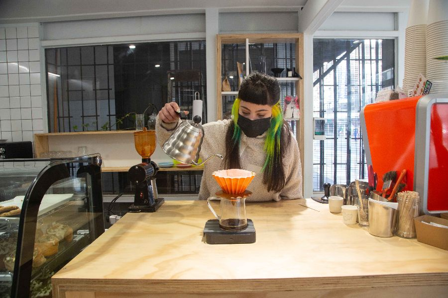
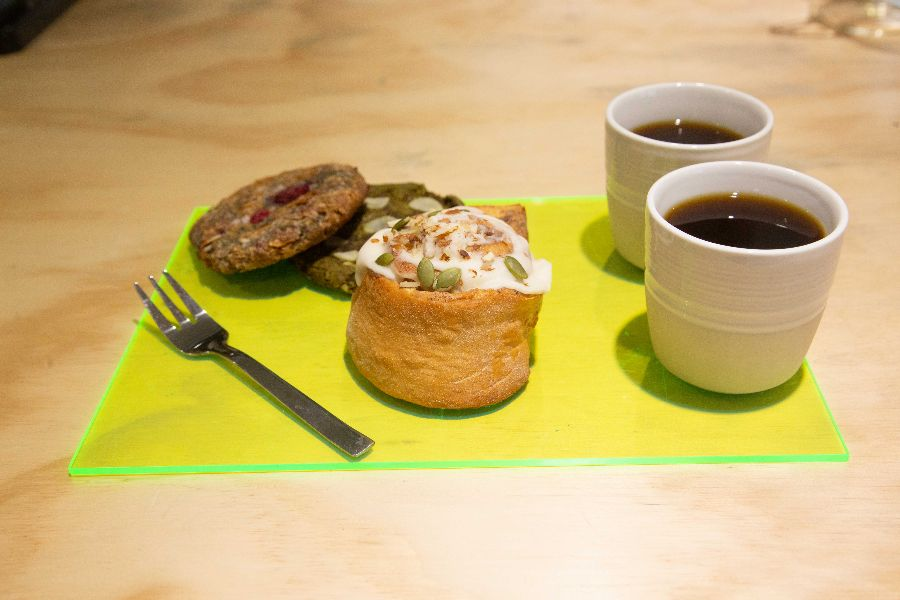

No cabe duda de que una taza de buen café llama a la inspiración, la creatividad y le invita a uno a trabajar e idear lo que sea de una forma más animosa y fructífera, ¿o no? El café despierta, inspira y ayuda. Es por estas senaciones y más que compartimos contigo una selección de las mejores cafeterías de especialidad que encontramos en el emblemático barrio Bellas Artes.

FOTO: © GREATCHILE
SABORES QUE NO TE PUEDES PERDER
-
ÁREA

-
TRICICLOS
FOTO: © FINDE LA TERCERA
En la calle Miraflores encuentras esta nueva cafetería, donde el café de especialidad se acompaña de deliciosas opciones veganas y sin gluten, de pequeños emprendimientos.
Área es un café de especialidad que acaba de abrir en la calle Miraflores, en el centro de Santiago, a cargo de Katherine Soto, bailarina y barista. Se trata de una pequeña barra donde por el momento puedes pedir al paso tu café de 3841 Coffee Roaster, con o sin leche, incluso vegetal si prefieres.

FOTO: © FINDE LA TERCERA

FOTO: © FACEBOOK TRICICLOS
Compra un café
© Cafeterías de especialidad